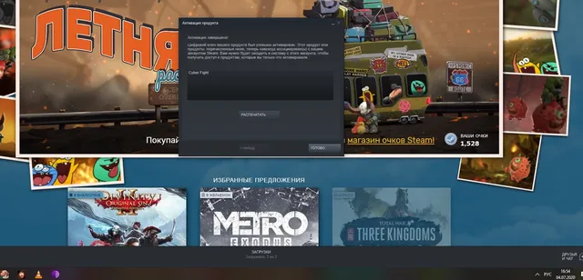

Интерактив
ВКонтакте
🏅И у нас есть победитель, им оказался: [id191917835|Глеб Иванов]!
4 июля 2020 · №117 в выгрузке стены · оригинал во ВКонтакте ↗
![🏅И у нас есть победитель, им оказался: [id191917835|Глеб Иванов]!](../img/vk/117_0t.webp)

#Интерактив@criticssteam
🏅И у нас есть победитель, им оказался: [id191917835|Глеб Иванов]!
✅Ответ был: Yes, Your Grace
☂Тех, кто не выиграл, просим, не падать духом, вам обязятельно повезет в следующие разы, коих еще будет очень много.
Напоминаем, что следующий интерактив будет во вторник, чтобы его не пропустить, включаем сами знаете что 🔔
Тем, кто не понял, что сейчас произошло, предлагаем ознакомитсья с небольшой статьей о данной рубрике: https://vk.com/@criticssteam-interaktive-vsya-sut?
🏅И у нас есть победитель, им оказался: [id191917835|Глеб Иванов]!
✅Ответ был: Yes, Your Grace
☂Тех, кто не выиграл, просим, не падать духом, вам обязятельно повезет в следующие разы, коих еще будет очень много.
Напоминаем, что следующий интерактив будет во вторник, чтобы его не пропустить, включаем сами знаете что 🔔
Тем, кто не понял, что сейчас произошло, предлагаем ознакомитсья с небольшой статьей о данной рубрике: https://vk.com/@criticssteam-interaktive-vsya-sut?